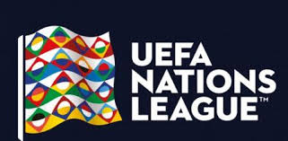

La competición que reúne a las mejores selecciones de Europa.
La UEFA Nations League es un torneo de fútbol de selecciones nacionales organizado por la UEFA. Se disputa desde 2018 y sustituye a los partidos amistosos internacionales. El torneo se divide en cuatro ligas (A, B, C y D) según el ranking de selecciones de la UEFA.
El objetivo principal es aumentar la calidad y el interés de los partidos de selecciones, permitiendo a los equipos competir contra rivales de su mismo nivel. Además, ofrece una vía alternativa para clasificarse para la Eurocopa y la Copa Mundial de la FIFA.
Las selecciones se dividen en cuatro ligas (A, B, C y D), con las ligas superiores albergando a los equipos mejor clasificados. Dentro de cada liga, los equipos se dividen en grupos. Los ganadores de grupo de las ligas B, C y D ascienden a la liga superior, mientras que los últimos de grupo de las ligas A, B y C descienden a la liga inferior.
Los ganadores de los grupos de la Liga A avanzan a la fase final, que consiste en semifinales, un partido por el tercer puesto y la final.
Para la edición 2024-25, los grupos de la liga A son los siguientes: